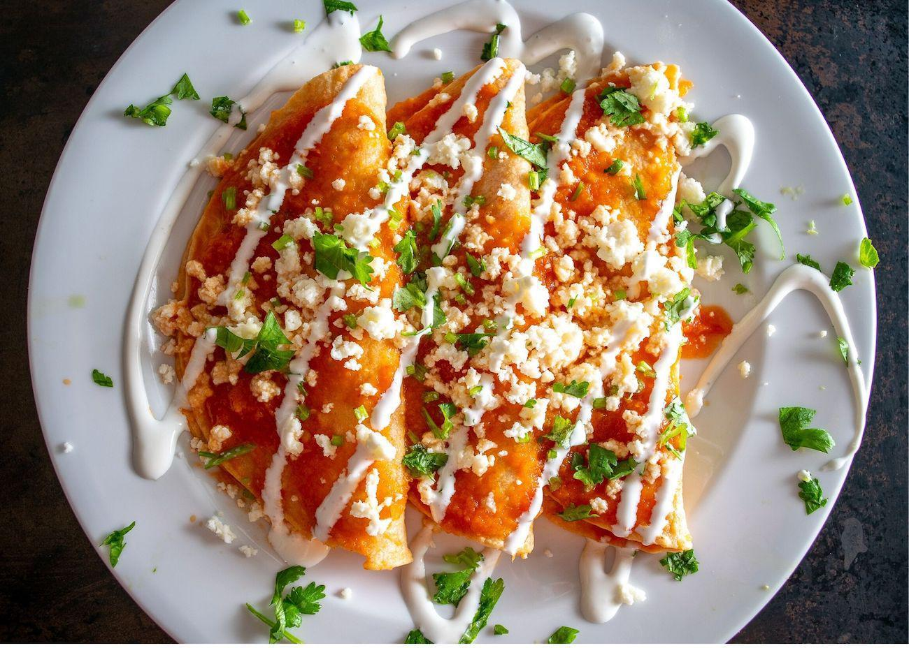

receta de entomatada

Rico plato mexicano que le gusta mucho a veronica
consiste en tortillas fritas con pollo en su interior cubierto de salsa de tomate
Ingredientes
- tortillas de maiz
- aceite
- salsa de tomate
- pollo deshebrado
- lechuga lavada
- crema
- queso cotija
Procedimiento
- Freir tortillas de maiz ligeramente en un sarten
- rellenar tortillas con pollo
- calentar salsa de tomate en un sarten
- colocar tortillas rellenas en salsa de tomate y cubrir generosamente
- servir en un plato de tu preferencia
- servir con lechuga rallada, crema y queso cotija al gusto